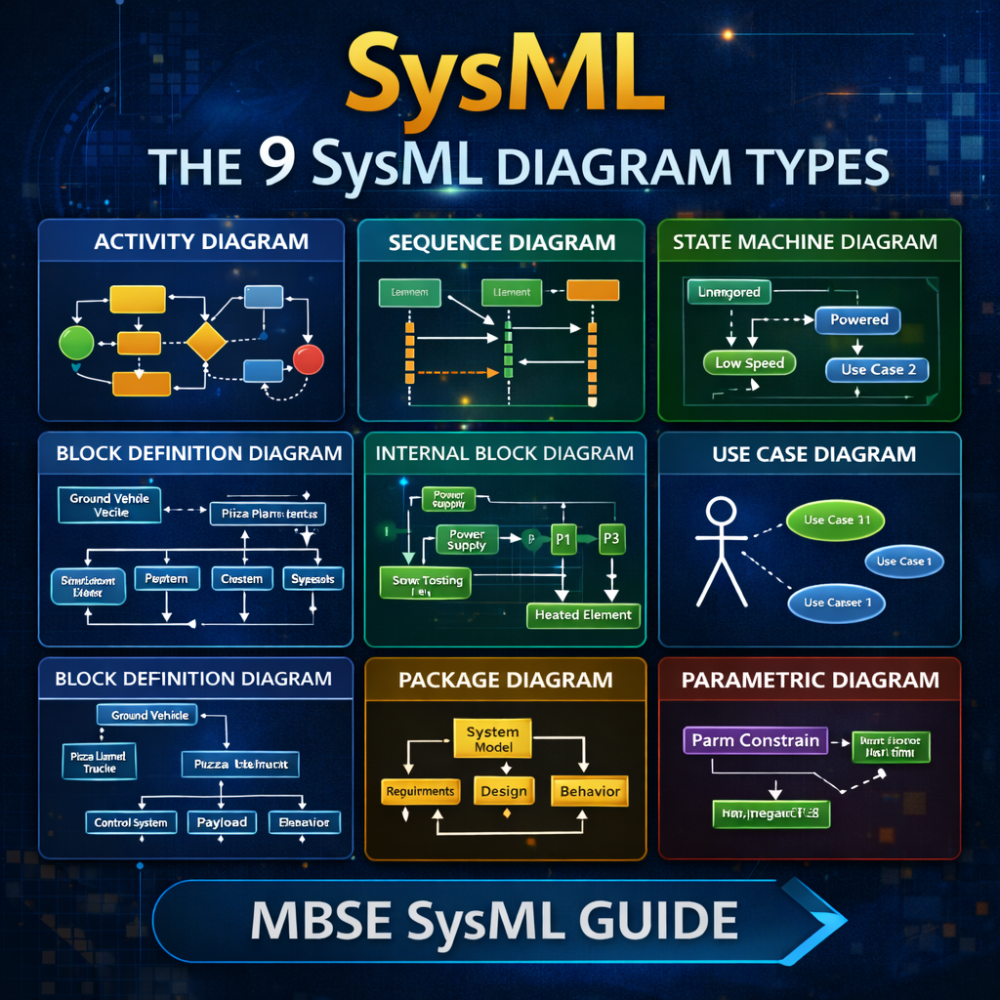
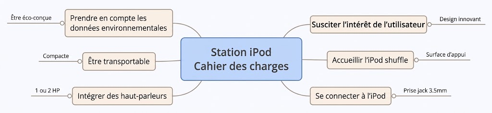

Accueil · Étape 3 sur 6
Étape 3
Cahier des charges et SysML
Le client veut que vous présentiez votre projet avec les diagrammes de description SysML.

Outil Fiche Outils SysML · dossier fiches outils / Fiche outils projet
Niveau
À faire, pas à pas
- Lire le cahier des charges ci-dessous : six fonctions, six critères.
- Écrire en une phrase le besoin : à qui sert la station, pour faire quoi ?
- Diagramme de contexte : placer la station au centre, puis les acteurs et éléments qui l'entourent.
- Diagramme des cas d'utilisation : lister ce que l'utilisateur fait avec la station.
- Diagramme des exigences : reprendre les six fonctions et leurs critères.
- Expliquer et justifier vos diagrammes, puis faire contrôler votre travail.
Dans le dossier
Page 4Diagramme SysML de contexteDiagramme SysML des cas d'utilisation
Évalué sur
Énoncer le besoin0,5 pt
Diagrammes de contexte, de cas d'utilisations expliqués et justifiés2 pts
À faire
- Réaliser le diagramme des cas d'utilisation.
- Réaliser le diagramme des exigences.
- Réaliser le diagramme de contexte demandé dans le dossier.
- Expliquer et justifier vos diagrammes, puis faire contrôler votre travail.
Dans le dossier
Page 4Diagramme SysML de contexteDiagramme SysML des cas d'utilisation
Évalué sur
Énoncer le besoin0,5 pt
Diagrammes de contexte, de cas d'utilisations expliqués et justifiés2 pts
Objectif
- Présenter le besoin et le cahier des charges au client avec les diagrammes SysML demandés, expliqués et justifiés. Faire contrôler votre travail.
Dans le dossier
Page 4Diagramme SysML de contexteDiagramme SysML des cas d'utilisation
Évalué sur
Énoncer le besoin0,5 pt
Diagrammes de contexte, de cas d'utilisations expliqués et justifiés2 pts
À compléter dans le dossier à rendre
Toutes vos productions vont dans un seul fichier : station-ipod-dossier-a-rendre.docx. Rien ne se dépose sur ce site. Les productions de cette étape se placent en page 4.
- Faites le travail demandé, puis faites-le contrôler.
- Insérez chaque production à sa place dans le dossier.
- Ajoutez une légende ou une explication sous chaque image.
- Enregistrez le fichier avant de passer à l'étape suivante.
Page 4 · éléments à insérer
Conseils
- Un diagramme par image, avec son titre.
- Sous chaque diagramme, deux phrases qui l'expliquent et le justifient.
Le cahier des charges
Six fonctions, chacune avec son critère. Vous les décrivez ici en SysML, puis vous les validez à l'étape 6.

Prendre en compte les données environnementales
CritèreÊtre éco-conçue
Être transportable
CritèreCompacte
Intégrer des haut-parleurs
Critère1 ou 2 HP
Susciter l'intérêt de l'utilisateur
CritèreDesign innovant
Accueillir l'iPod shuffle
CritèreSurface d'appui
Se connecter à l'iPod
CritèrePrise jack 3.5mm
DiagrammeDe contexte
La station, ses utilisateurs et son environnement. Demandé en page 4 du dossier.
DiagrammeDes cas d'utilisation
Ce que l'utilisateur fait avec la station. À expliquer et à justifier.
DiagrammeDes exigences
Les six fonctions du cahier des charges et leurs critères, présentés au client.
Documents de la séquence et leçon de binôme
- PDFSysML : les diagrammesAnnexe documentaire, document original ·
documents/DT-diagrammes-SYSML.pdfOuvrir - PDFFiche Outils SysMLSyntaxe des diagrammes ·
documents/fiche-outils-sysml.pdfOuvrir - PPTCarte mentaleLeçon, à suivre en binôme ·
documents/carte-mentale.pptOuvrir - PPTBrainstormingLeçon, à suivre en binôme ·
documents/brainstorming.pptOuvrir - PPTXTravail demandéActivité à réaliser en binôme ·
documents/travail-demande.pptxOuvrir